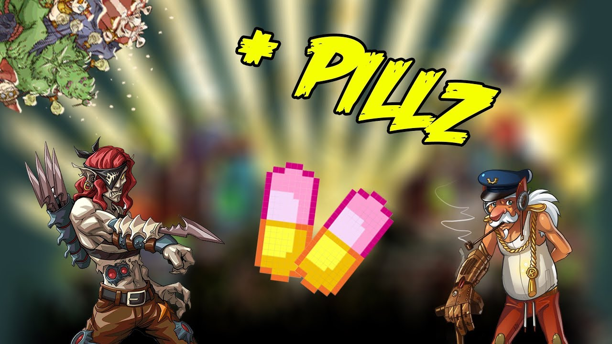

Cada jugador comienza con cuatro cartas de su deck, cada carta contiene un valor de ataque y de damage diferente, el ataque sirve para ganar el round contra la carta del rival y el damage indica los puntos de vida que se le descontaran al rival en cado de que ganes el round.
Los pills sirven para aumentar el valor de ataque de tu carta. en cada combate los jugadores empiezan con 12, en cada round puedes darle a tu carta una cantidad de pills y su ataque se vera aumentado segun la cantidad de pills utilizado, por cada pill su ataque se vera aumentado agregando el valor de su poder
Ejemplo, si se utiliza un pill en una carta con 7 de poder su ataque sera de 14. si se utilizan 2 pills su ataque sera de 21 y asi susesivamente. el jugador que tenga mas vidas al final del cuarto turno o deje en K.O (sin vidas ) al rival sera el vencedor.